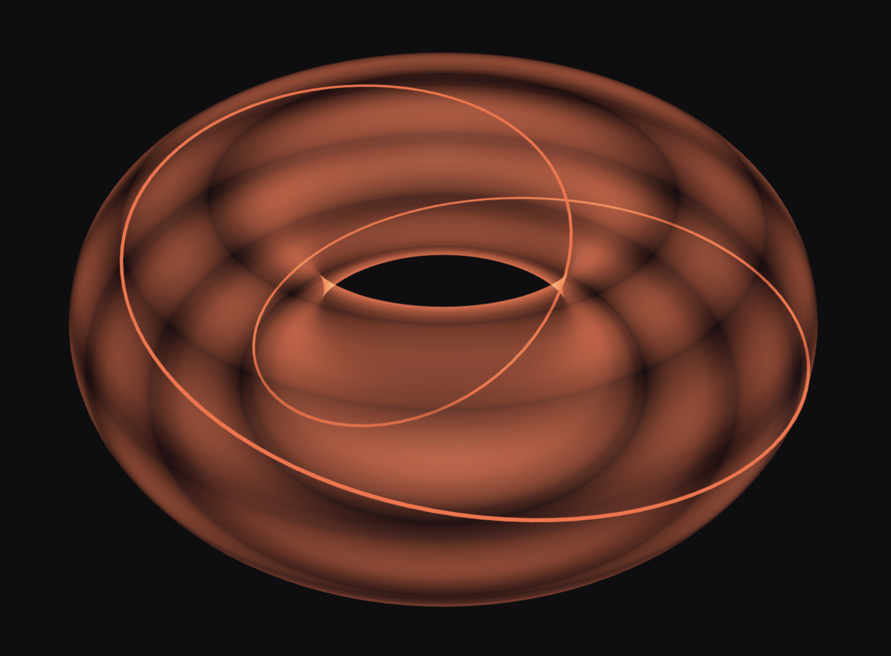

Where to jump into the repository.
The best entry point is the Forma repository on GitHub. That is where the papers, studies, derivations, visualizations, and open questions all live.
The guide below is simply a short path into that material.

A plain-language entry point built around one question: what if matter is not made of little pieces of stuff at all?
The big-picture pitch: why the project matters, what it tries to unify, and how it relates to Einstein, Kaluza, and the Standard Model.
See the other papers collected in the project.
Background reading for anyone who wants to learn missing concepts before diving deeper.
Interactive visuals for some of the geometry and physical ideas in the project. Clone the repo to run them locally.
The active model. This is where the current architecture and headline numerical claims are described in detail.
Read the white paper.
See mathematical derivations for the model.
A guide to the computational studies behind the project, including what is active, finished, and still open.
Start with the top-level README. An AI assistant can help you parse the project and find what you are looking for more quickly. There are many studies, papers, side paths, hypotheticals, and what-ifs.